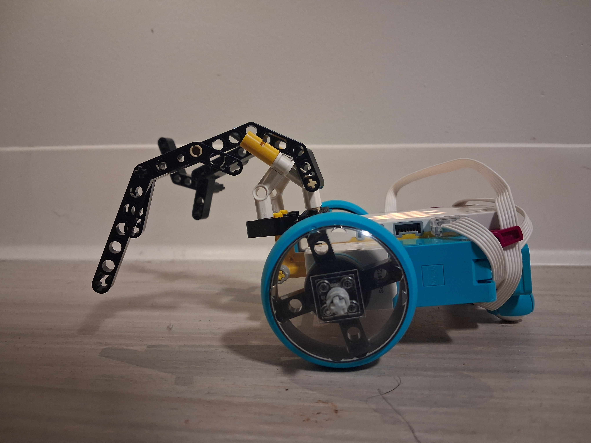

I had a hard time figuring out what I wanted to use from an animal. The kit itself didn't have that many pieces in my mind, though I was able to come up with the conclusion that I should use a reindeer as the animal I am copying. I tried to mimic the antlers and put that on a car to give "offense" power. I wouldn't say it was too effective, as the antlers I made are not that hard and do not actually hurt.